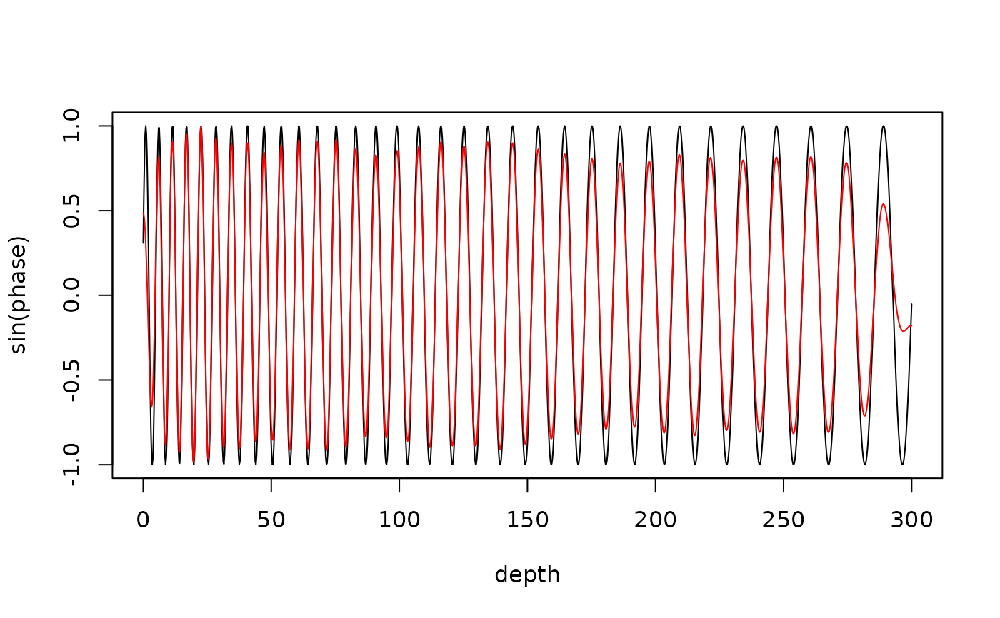

The dynamic_filter function extracts a cycle
whose frequency changes along the depth/time axis (e.g. because of a
changing sedimentation rate) using a pass band that follows user-defined
control points. The method is the dynamic filter of Nicolas Thibault and
Giovanni Rizzi (2019), adapted by Mingsong Li (2020) for Acycle's
"Frequency Stabilization" tool, in the deterministic form of Acycle's
current core: the series is divided into sliding windows; in each window
the pass band is obtained by linear interpolation of the control points
at the window centre (held constant beyond the first/last control point),
the window is mean-centred, tapered by the square root of a
half-sample-shifted Hann window, Gaussian band-pass filtered (half-power
edges at the lower/upper frequency, zero padded to
2^nextpow2(2 * window_samples - 1)), tapered again and
overlap-added. The result is divided by the summed Hann weights.
In Acycle the control points are clicked on an evolutionary spectrum;
here they are supplied as arguments, e.g. built with
dynamic_filter_controls from a period curve tracked with
WaverideR (track_period_wavelet, completed_series).
Translated from Acycle v3.1 acycleDynamicFilter.m (strict core; legacy
flow dynamic_filter.m / dynamic_filter_lang.m, GUI DynamicFilter.m)
(Mingsong Li).
Usage
dynamic_filter(
data = NULL,
controls = NULL,
window_length = NULL,
step_length = NULL,
pad_ends = TRUE,
genplot = FALSE,
x_lab = "depth",
y_lab = "proxy",
verbose = FALSE
)Arguments
- data
Input series (two-column matrix or data frame of finite numeric values: depth/time in column 1, strictly increasing and regularly sampled to a relative spacing tolerance of 1e-5, proxy value in column 2; at least 8 rows). Interpolate irregular data to a regular grid beforehand. Required (
Default=NULL).- controls
Pass band control points, in cycles per depth/time unit. Either
a matrix or data frame with columns
depth,f_low,f_highand optionallyf_centre(unnamed columns are taken in that order), e.g. the output ofdynamic_filter_controls, ora list with elements
lowerandupper, each a two-column matrix [depth, frequency] (separate lower/upper boundary picks, which may be at different depths).
Depths must be strictly increasing and lie within the data range, frequencies must be > 0, with
f_low < f_highandf_highbelow the Nyquist frequency everywhere. Between control points the band is linearly interpolated, beyond the first/last point it is held constant; a single row gives a constant pass band. Because the Gaussian response is symmetric, a suppliedf_centremust equal(f_low + f_high) / 2(it is only checked). Required (Default=NULL).- window_length
Length of the sliding windows, in depth/time units (numeric, > 0, at most the record length and at least 8 samples). Longer windows give a sharper frequency resolution but follow changes in the pass band less closely; a window of about two times the longest period of the target cycle is recommended.
NULLuses 20% of the record length (Acycle GUI default).Default=NULL.- step_length
Step between successive windows, in depth/time units (numeric, > 0, between half a sample interval and
window_length).NULLuses 4 times the sample interval, or(record length - window_length) / 500when that would give more than 500 steps (Acycle GUI default).Default=NULL.- pad_ends
Mirror the record at both ends by one window length before filtering (logical, TRUE or FALSE). The first and last samples are then covered by many windows; without padding they are covered by a single window whose taper weight is close to zero, and dividing by that weight inflates the filtered values at the ends.
FALSEreproduces Acycle exactly.Default=TRUE.- genplot
Plot the data and the filtered signal with
plot_dynamic_filter(logical, TRUE or FALSE).Default=FALSE.- x_lab
Label of the depth/time axis of the plot, passed to
plot_dynamic_filter(character). Only used whengenplot=TRUE.Default="depth".- y_lab
Label of the proxy axis of the plot, passed to
plot_dynamic_filter(character). Only used whengenplot=TRUE.Default="proxy".- verbose
Show a progress bar over the windows (logical, TRUE or FALSE).
Default=FALSE.
Value
A list with elements
- filtered
matrix with columns
depth,filtered,coverage_count(number of windows covering each sample) andcoverage_weight(sum of Hann weights).- windows
matrix with one row per window and columns
centre,f_low,f_high,f_centre,start_depth,end_depth,start_index,end_index.- lower_controls, upper_controls
the 2-column [depth, frequency] control points used.
- sample_interval
median sample spacing.
- nyquist
Nyquist frequency.
- window_samples, step_samples
window and step in samples.
- window_length, step_length
effective (sample-rounded) window and step in depth units.
- fft_length
zero-padded FFT length per window.
- terminal_window_appended
whether a final window ending on the last sample was added.
References
Li, M., Hinnov, L., Kump, L., 2019. Acycle: Time-series analysis software for paleoclimate research and education. Computers & Geosciences 127, 12-22. <doi:10.1016/j.cageo.2019.02.011>
Thibault, N., Rizzi, G. (2019). Dynamic filtering routine, distributed with Acycle (Frequency Stabilization).
Author
Michiel Arts (R translation); original MATLAB code: Nicolas Thibault and Giovanni Rizzi (2019), adapted by Mingsong Li (Acycle).
Examples
# \donttest{
# cycle whose period grows linearly from 5 to 15 m (changing sed. rate)
depth <- seq(0, 300, by = 0.25)
period <- 5 + 10 * depth / 300
phase <- 2 * pi * cumsum(1 / period) * 0.25
set.seed(1)
proxy <- sin(phase) + 0.8 * sin(2 * pi * depth / 2.1) + rnorm(length(depth), sd = 0.3)
ctrl <- dynamic_filter_controls(tracked = cbind(depth, period),
rel_bandwidth = 0.3, n_points = 30)
res <- dynamic_filter(data = cbind(depth, proxy), controls = ctrl,
window_length = 40, step_length = 1, genplot = FALSE)
plot(depth, sin(phase), type = "l")
lines(res$filtered[, 1], res$filtered[, 2], col = "red")

# }